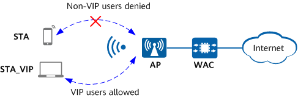

In some high-density scenarios such as exhibition halls and stadiums, a large number of STAs may connect to a single radio or VAP if the number of access STAs on the radio or VAP is not limited. These STAs operate on the same channel, and concurrent services and air interface contention may occur, degrading user experience.
Therefore, the number of access STAs on a radio or VAP usually needs to be limited in these scenarios. Once the number of access STAs on the radio or VAP reaches the maximum, new STAs are not allowed to access the network. This, however, causes VIP users to fail to access the network, affecting VIP user experience.
In this case, preferential access of VIP users can be configured to allow VIP users to access the network and disconnect online non-VIP users when the number of access users reaches the threshold. This ensures access experience of VIP users.

Preferential access of VIP users can be configured based on a radio or VAP. You can configure either of the two modes or both.
system-view
wlan
rrm-profile name profile-name
uac client-number enable
By default, the CAC function is disabled.
uac client-number threshold access access-threshold
By default, the user CAC access threshold based on the number of users is 64.
uac reach-access-threshold priority-replace
By default, after the number of access users reaches the threshold, the SSID is not hidden, and existing access users are not replaced based on priorities.
ssid-profile name profile-name
max-sta-number max-sta-number
By default, a VAP allows for a maximum of 64 successfully associated STAs.
reach-max-sta priority-replace
By default, automatic SSID hiding is enabled and the function of replacing low-priority STAs with high-priority STAs is disabled when the number of access STAs reaches the maximum.
quit
vap-profile name profile-name
ssid-profile profile-name